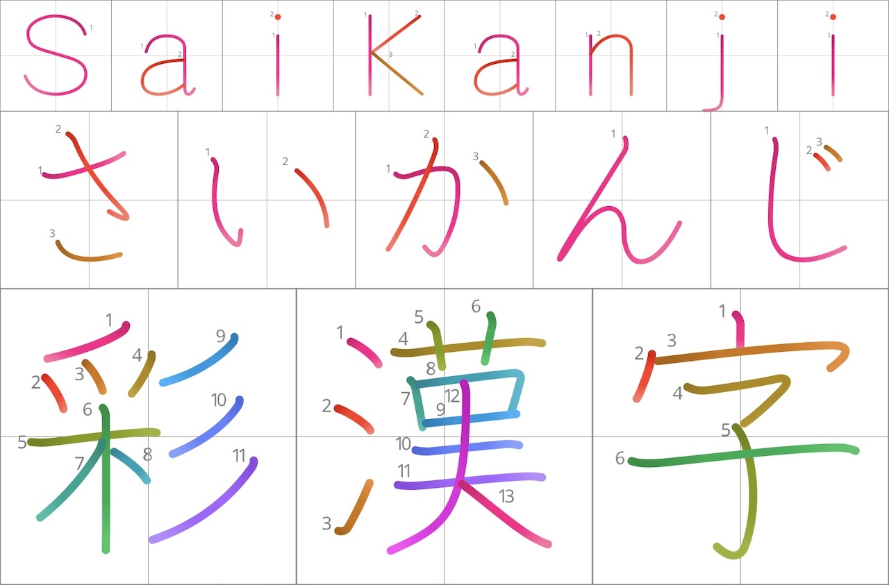

Desktop
-
Download a
.ttffile from the GitHub release. - Open the file and install it with your system font manager.
- Select the SaiKanji style in Pages, design tools, Anki, or other apps.

SaiKanji turns KanjiVG stroke data into a modern hybrid OpenType font with per-stroke color, stroke-order numbers, optional guide grids, and broad app/browser compatibility.
Live Demo
Edit the text, then combine palette, fill, light, and grid options. Fonts are roughly 15 MB each and may take a moment to download.
Download
Download the currently selected demo font, browse every TTF file below, or open GitHub releases for the full release.
Install
.ttf file from the
GitHub release.
Use the WOFF2 files with @font-face.
Host the files with your site when possible so font
loading is cacheable and predictable.
Files
Gradient files preserve smooth stroke color. Solid files use flat stroke color. Black files are the simplest monochrome fallback.
License & Acknowledgements
SaiKanji is licensed under CC BY-SA 4.0. It is derived from KanjiVG by Ulrich Apel, released under CC BY-SA 3.0, and was inspired by kanji-colorize and Playwrite.